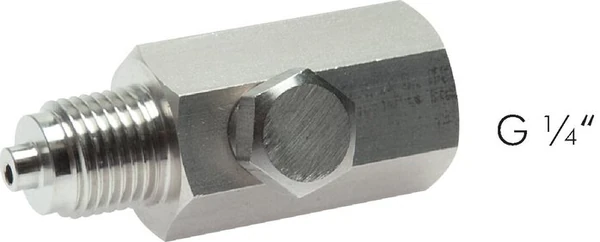
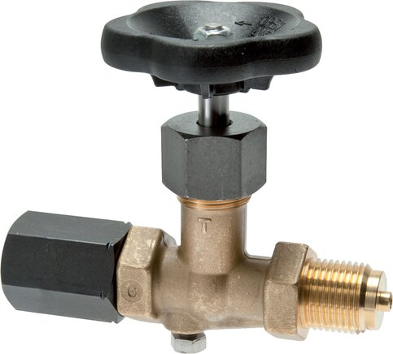

Xung áp (pressure spike/pulsation) từ bơm, máy nén, van đóng nhanh làm kim đồng hồ rung mạnh và phá hỏng Bourdon tube theo thời gian. Bộ giảm xung (snubber / Stoßminderer) và bộ lọc đầu vào (Vorschaltfilter) WIKA giúp giảm vấn đề này. Fast Group Engineering là đại lý cung cấp hàng chính hãng WIKA (Germany) tại Việt Nam.

Gợi ý chọn nhanh
- Cần bảo vệ đồng hồ trước hơi nóng, rung, xung áp hoặc ăn mòn.
- Cần lắp van cô lập để tháo/kiểm định gauge.
- Cần xử lý lệch chuẩn ren hoặc gioăng làm kín.
- Ren vào/ra, vật liệu và áp suất làm việc.
- Môi chất, nhiệt độ, tiêu chuẩn DIN/EN cần dùng.
- Loại phụ kiện: valve, siphon, snubber, gasket, adapter.
- Danh mục phụ kiện đồng hồ áp suất WIKA.
- Bài van chặn, siphon, snubber.
- Bài gioăng và đầu nối chuyển ren.
Tóm tắt nhanh
- Snubber hạn chế dòng môi chất qua khe/lỗ nhỏ → làm mượt xung áp.
- Vorschaltfilter lọc hạt và cản dòng, bảo vệ đồng hồ khỏi tắc & xung.
- Kết quả: kim ổn định, giảm mài mòn, tăng tuổi thọ.
- Bổ sung cho đồng hồ khô; với rung mạnh vẫn nên cân nhắc glycerin.

Xung áp gây hại thế nào?
| Nguồn xung áp | Hậu quả với đồng hồ |
|---|---|
| Bơm piston/màng | Kim rung liên tục, mỏi cơ cấu |
| Máy nén | Dao động áp mạnh |
| Van đóng/mở nhanh | Water hammer, đỉnh áp đột ngột |
| Dòng chảy rối | Kim nhấp nháy, khó đọc |
Xung lặp lại làm Bourdon tube và bánh răng mỏi, giảm chính xác và tuổi thọ.
Snubber hoạt động ra sao?
Snubber có tiết diện thu hẹp (khe/lỗ/phần tử xốp) hạn chế tốc độ thay đổi áp tới đồng hồ. Đỉnh xung bị làm phẳng, kim đọc ổn định. Một số loại có thể điều chỉnh mức cản theo môi chất (lỏng/khí).
Snubber vs Glycerin vs cả hai
| Giải pháp | Chống xung áp | Chống rung ngoài | Ghi chú |
|---|---|---|---|
| Snubber | Tốt (xung thủy lực) | Không | Gắn ở chân đồng hồ |
| Glycerin fill | Khá | Tốt (rung cơ khí) | Đổ dầu trong vỏ |
| Snubber + glycerin | Rất tốt | Tốt | Ứng dụng khắc nghiệt |
Xung áp từ dòng chảy → snubber; rung động cơ khí từ máy → glycerin; cả hai → kết hợp.
Snubber, siphon, van chặn: mỗi phụ kiện trị một vấn đề
Dễ nhầm giữa các phụ kiện bảo vệ đồng hồ vì chúng trông na ná nhau. Thực chất mỗi loại giải quyết một bài toán riêng: snubber trị xung áp/dao động bằng cách hạn chế dòng; siphon trị nhiệt độ cao bằng cột nước ngưng; van chặn để cô lập đồng hồ khi kiểm định/thay thế; còn glycerin (đổ trong vỏ đồng hồ) trị rung cơ khí từ máy móc. Trong ứng dụng khắc nghiệt, các phụ kiện này được dùng phối hợp, mỗi thứ bù cho một điểm yếu.
| Vấn đề | Giải pháp đúng |
|---|---|
| Xung áp thủy lực (bơm, van nhanh) | Snubber |
| Rung cơ khí từ máy | Đồng hồ glycerin |
| Nhiệt độ cao (hơi) | Ống siphon |
| Cần cô lập để kiểm định | Van chặn |
| Môi chất bẩn/có hạt | Vorschaltfilter (lọc) |
Chọn tiết diện snubber theo môi chất
Đây là điểm kỹ thuật quan trọng: snubber cho chất lỏng và cho chất khí có tiết diện cản khác nhau, vì độ nhớt và khả năng nén của hai loại môi chất rất khác. Dùng snubber sai loại có thể cản quá ít (không giảm được xung) hoặc quá nhiều (đồng hồ phản hồi ì, gần như "đơ"). Với môi chất nhớt hoặc dễ đóng cặn, tiết diện quá nhỏ còn dễ tắc. Vì vậy khi hỏi giá, hãy nêu rõ môi chất là lỏng hay khí, độ nhớt và mức xung để chọn đúng loại — tốt nhất là snubber điều chỉnh được để tinh chỉnh tại hiện trường.
Cách chọn (Checklist)
- [ ] Môi chất: lỏng hay khí (chọn tiết diện phù hợp).
- [ ] Áp làm việc & ren kết nối (G¼, G½...).
- [ ] Mức xung (bơm/máy nén/van nhanh).
- [ ] Vật liệu: thép/inox theo môi chất.
- [ ] Có cần kèm lọc (Vorschaltfilter) cho môi chất bẩn.
- [ ] Cân nhắc thêm glycerin nếu có rung cơ khí.
FAQ
Snubber có làm chậm đo không? Làm mượt phản hồi (giảm nhấp nháy); trễ nhỏ, chấp nhận được cho giám sát.
Snubber thay được glycerin không? Không hoàn toàn — snubber trị xung thủy lực, glycerin trị rung cơ khí; khác cơ chế.
Có loại điều chỉnh được không? Có, một số snubber cho phép chỉnh mức cản theo môi chất.
Sai lầm thường gặp
- Dùng snubber khí cho môi chất lỏng (và ngược lại): cản sai mức, không hiệu quả hoặc làm đồng hồ ì.
- Kỳ vọng snubber trị được rung cơ khí: rung từ máy cần glycerin, snubber không xử lý được.
- Tiết diện quá nhỏ với môi chất bẩn: dễ tắc; nên kèm lọc hoặc chọn loại chống tắc.
- Bỏ qua nguồn gốc xung: không xử lý tận gốc (van đóng quá nhanh, thiếu bình tích áp) mà chỉ dựa vào snubber.
Vorschaltfilter: lọc và cản dòng cho môi chất bẩn
Với môi chất có hạt, cặn hoặc dễ đóng cáu, ngoài xung áp còn có rủi ro tắc lỗ dẫn áp của đồng hồ. Vorschaltfilter (bộ lọc đầu vào) đặt trước đồng hồ vừa giữ lại hạt, vừa cản dòng nên có thêm tác dụng làm mượt xung nhẹ. Đây là lựa chọn phù hợp khi vấn đề chính là môi chất bẩn hơn là xung áp mạnh. Trong nhiều hệ, người ta dùng filter cho môi chất bẩn và snubber cho xung mạnh, tùy đặc điểm cụ thể của điểm đo.
Ví dụ chọn nhanh
Đo áp đầu đẩy bơm piston (xung mạnh, môi chất lỏng sạch): chọn snubber loại cho chất lỏng, ren G½ khớp đồng hồ, vật liệu inox nếu môi chất ăn mòn; nếu bơm còn gây rung cơ khí thì kết hợp đồng hồ glycerin. Đo áp khí sau máy nén (dao động, môi chất khí): chọn snubber loại cho khí. Đo áp trên đường có bùn/cặn: ưu tiên Vorschaltfilter. Cùng nguyên tắc: xác định môi chất, nguồn xung và độ sạch để chọn đúng phụ kiện.
Xử lý tận gốc song song với snubber
Snubber giảm hậu quả của xung, nhưng nếu xung quá mạnh, nên xử lý cả nguồn: lắp bình tích áp (accumulator/pulsation dampener) cho bơm định lượng, chỉnh van đóng chậm hơn để tránh water hammer, hoặc bố trí điểm đo tránh vùng dòng chảy rối ngay sau van/co. Kết hợp giảm xung tại nguồn với snubber tại đồng hồ cho kết quả bền và ổn định nhất, đặc biệt ở hệ áp cao.
Snubber lắp ở đâu trong cụm đồng hồ?
Thường lắp ngay tại chân ren giữa process và đồng hồ, sau van chặn. Với hơi nóng thì đặt sau siphon để vừa hạ nhiệt vừa giảm xung.
Snubber có cần bảo trì không?
Loại khe/lỗ ít cần bảo trì; loại phần tử xốp hoặc dùng cho môi chất bẩn nên kiểm tra định kỳ để tránh tắc làm đồng hồ phản hồi chậm.
Cần tư vấn hoặc báo giá snubber/filter WIKA?
Gửi môi chất, áp, ren, nguồn xung để nhận báo giá trong 24h.
- Email: minhduc@fastgroup.vn · Zalo: (+84) 938 888 958
Fast Group Engineering – đại lý cung cấp hàng chính hãng WIKA (Germany) tại Việt Nam.
Bài liên quan: [Glycerin vs đồng hồ khô] · [Van chặn đồng hồ áp suất] · [Ống siphon bảo vệ đồng hồ] · [Đồng hồ áp suất WIKA là gì]